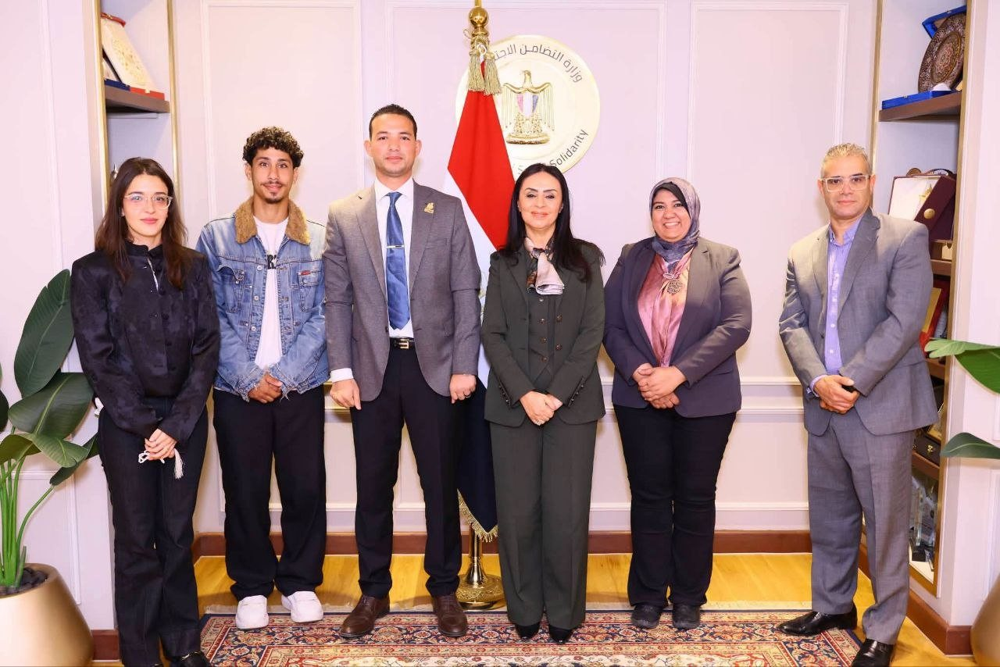

وزيرة التضامن الاجتماعي تكرم نور شعبان لفوزه بجائزة الشارقة للاتصال الحكومي لعام 2026
استقبلت الدكتورة مايا مرسي، وزيرة التضامن الاجتماعي، الشاب نور شعبان، أحد خريجي دور الرعاية، لتكريمه بمناسبة فوزه بجائزة الشارقة للاتصال الحكومي لعام 2026، عن فئة «أفضل مبادرة شبابية في الاتصال»؛ في إنجازٍ يعكس تميز الشباب المصري وقدرتهم على الإبداع والابتكار والمنافسة إقليمياً ودولياً.
وأعربت الدكتورة مايا مرسي عن بالغ فخرها واعتزازها بهذا الإنجاز، مؤكدة أن قصة نجاح نور شعبان تمثل نموذجاً ملهماً لما يمتلكه أبناء دور الرعاية من طاقات واعدة وقدرات استثنائية، وأن توفير الفرص الحقيقية والدعم والتمكين يمثل جسراً أساسياً لتحويل الطموحات إلى إنجازات ملموسة.
وأكدت وزيرة التضامن الاجتماعي أن الوزارة تولي اهتماماً بالغاً برعاية أبناء دور الرعاية وتمكينهم، ليس فقط من خلال توفير أوجه الحماية والدعم، بل أيضاً بالاستثمار في قدراتهم ومواهبهم، وإتاحة الفرص أمامهم لإثبات ذاتهم والمشاركة الفاعلة في مختلف المجالات.
وأضافت أن الوزارة حريصة على إبراز النماذج الناجحة والملهمة من أبنائها، وتسليط الضوء على إنجازاتهم باعتبارهم قادةً قادرين على إلهام أقرانهم، وترسيخ ثقافة الطموح والإصرار والاجتهاد.
وفي هذا السياق، وجهت الدكتورة مايا مرسي بتحمُّل برنامج "تكافؤ الفرص التعليمية" التابع للوزارة كافة المصروفات الدراسية لنور شعبان للحصول على درجة الدكتوراه.
ومن جانبه، أعرب نور شعبان عن سعادته واعتزازه بلقاء وزيرة التضامن الاجتماعي وتكريمه، مُثمناً اهتمام الوزارة بأبناء دور الرعاية وحرصها على دعم المتميزين منهم، ومؤكداً أن هذا التكريم يمثل دافعاً قوياً لمواصلة النجاح وتطوير المبادرات التي تسهم في خدمة المجتمع وإحداث أثر إيجابي.
وأضاف أن هذا التكريم يجسد توجه وزارة التضامن الاجتماعي نحو الانتقال من مفهوم "الرعاية التقليدية" إلى آفاق أوسع من التمكين وبناء القدرات، إيماناً منها بأن كل شاب قادر على النجاح متى أُتيحت له الفرصة، وأن أبناء دور الرعاية شركاء فاعلون في مسيرة التنمية وصناعة مستقبل الوطن.


